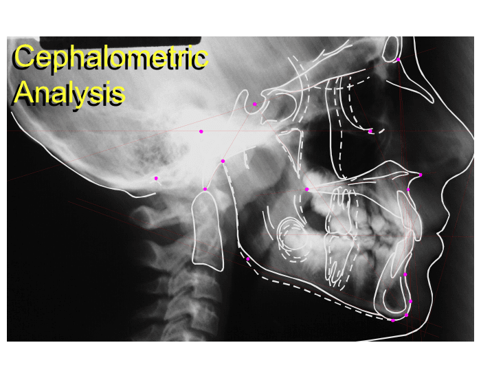

آزمون چهار گزینهای
نام خود را وارد کنید:
دانشجوی گرامی با سلام و احترام لطفا در ارتباط با کلیشه لترال سفالومتری که در اختیار شما قرار داده شده است به سوالات زیر پاسخ دهید:
1: عدد 2 در تصویر نشان دهنده ی کدام لندمارک سفالومتری می باشد؟

2
Sella
Orbitale
Porion
Pogonion
2- کدام یک از موارد زیر نقطه Gnathion (Gn) را به درستی تعریف کرده است؟
قدامي ترين نقطه سمفيز يا چانه ي استخواني
تحتاني ترين نقطه روي سمفيز منديبل
محل طلاقي بوردر خلفي راموس و بوردر تحتاني منديبل
قدامي تحتاني ترين نقطه ي سمفيز منديبل
3- عدد 6 در تصویر نشان دهنده ی نقطه ........ می باشد.
6
PNS
PT
ANS
Na
4- به عمیق ترین نقطه تقعر موجود در بوردر قدامي ماگزيلا در حدود جلوي ريشه ي اينسيزور ، نقطه ........ گفته می شود.
B
ANS
A
Bo
5- عدد 5 در تصویر نشان دهنده ی نقطه ............. می باشد..
5
Ba
Co
Po
Bo
لطفا در دومین کلیشه لترال سفالومتری که در اختیار شما قرار داده شده است، به سوالات زیر پاسخ دهید:
6- خط نشان دهنده ی کدام یک از پلان های زیر می باشد؟
mandibular plan
Frankfort plan
Palatal plan
SN
7- نقاط تشکیل دهنده پلان پالاتال کدام است؟
Po-Or
Sella-Nasion
ANS-PNS
Go-Gn
8- خط نشان دهنده ی پلان ........... می باشد؟
N-perpendicular
ANS- Me
Facial Plan
S-GN
9- Facial Planاز چه نقاطی تشکیل شده است؟
N- Pog
N-Me
ANS-Me
N-B
لطفا در سومین کلیشه لترال سفالومتری که در اختیار شما قرار داده شده است، به سوالات زیر پاسخ دهید:
10- عدد 4 نشان دهنده کدام یک از زوایای زیر می باشد؟
4
N-perpendicular
ANS- Me
Facial Plan
S-GN
11-کدام یک از زوایای زیر نشان دهنده IMPA می باشد؟
2
3
1
4
1
2
3
4
12- کدام یک از اعداد نشان دهنده زاویه Y-Axis می باشد؟
5
3
1
6
5
3
6
1
پایان آزمون